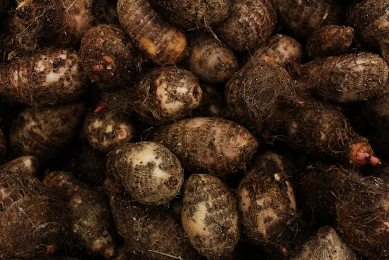
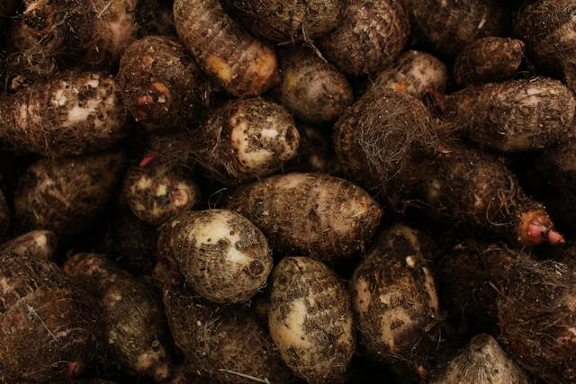

Classes of Food
Carbohydrates
Carbohydrate molecules are made up of hydrogen atoms, oxygen, and carbon. They can be classified according to the number of monomer units in them.
Therefore, they can be divided into polysaccharides, monosaccharides, and disaccharides.
Carbohydrates contains enzymes called sucrose and if you notice, you see that lots of people who take in excess carbohydrate tend to battle diabetes.
They can also be called energy giving foods
Food is so essential to the body because i believe nobody can leave without food. Rice is a carbohydrate is one of the most consumed in Nigeria and africa at large
- rice
- wheat
- maize
- yam
- bread

 

Protein
Protein molecules comprise hydrogen, oxygen and hydrogen, carbon, and nitrogen. This nitrogen is an essential part of the amino acids needed for our body. The functions of food with proteins include building cells, maintaining muscles, and improving metabolism. Our body structure is mostly made up of protein.
roteins are the most abundant biological macromolecules, occurring in all cells
and all parts of cells.Proteins are
polymers of amino acids, with each amino acid residue joined to its neighbor
by a specific type of covalent bond.
The diversity of the thousands of proteins found in
nature arises from the commonly occurring 20 amino acids. Proteins can be broken down (hydrolyzed)
to their constituent amino acids the free amino acids derived from them
- meat
- eggs
- milk
- fish
- beans


Fats
Saturated fats are where all carbon atoms are bonded to hydrogen atoms. Unsaturated fats are where carbon is usually connected with double bonds with a few hydrogen molecules.
Fats also help our body to absorb fat-soluble vitamins like – Vitamin A, K, D and E. As fats are the highly concentrated energy, they produce double the energy as Protein or Carbohydrates with the same amount.
There are three types of fatty acids -1) saturated, 2) polyunsaturated, and 3) monounsaturated. These three components together make triglycerides. And fats are made of 95% triglycerides.
Saturated fats generally come from animals (although some plants produce Saturated fats in low amounts). Also, Saturated fats stay solid at an average temperature.
- cashew nuts
- vegetables
- groundnuts
- avocados
- milk
`


Fiber
Fiber is defined as a type of carbohydrate that is not absorbed by human beings. Fiber in the diet is usually made up of cellulose. It’s a large carbohydrate that can’t be digested by our body because it lacks enzymes.
Dietary
fibers are those which are native to plants while functional
fibers are those which are added to foods. Both dietary and
functional fibers can have positive effects on health. Sources
of dietary fiber include grains, fruits, vegetables, and legumes
such as beans and peas
An important role of many types of fiber is their ability to act
as prebiotics—substances that alters the types and activities
of the bacteria, or microflora, that live inside the human gut.
While the human microflora remains an active area of
scientific research, its relationship with inflammation, immune
function, and the health of the colon are promising areas for
understanding how fiber may offer protective effects against a
variety of diseases.
- oranges
- onions
- beans
- broccoli
- garlic


Minerals
Minerals can be defined as chemical elements that are needed by living things. Elements are less needed for our body, but they are also essential to keeping us healthy.
Calcium is a mineral found in many foods. Almost all calcium is stored in bones and teeth to help make and keep them strong. Your body needs calcium to help muscles and blood vessels contract and expand, and to send messages through the nervous system.
Minerals help our bodies develop and function. They are essential for good health. Knowing about different minerals and what they do can help you to make sure you get enough of the minerals that you need.
- calcium
- iron
- meat
- fish
- vegatables


Vitamins
Vitamins are another nutrient that is not needed in large quantities but plays an essential role in our body.Vitamins are an essential part of our immune system as it helps us to regulate and maintain the healthy process of our body. They can be found in almost any product on the Earth.
vitamins mostly are present in fruits.The best way to get enough vitamins is to eat a balanced diet with a variety of foods. In some cases, you may need to take vitamin supplements
ou can usually get all your vitamins from the foods you eat. Your body can also make vitamins D and K. People who eat a vegetarian diet may need to take a vitamin B12 supplement.
- watermelon
- grapes
- pineapples
- apple
- oranges


Water
-
Water is an essential part of our food. Human is essentially 80% water. Therefore, we need water to keep that balance to survive and stay healthy. Fortunately, water can be found in any product.
- watermelon
- cucumber
- pineapple
to read more